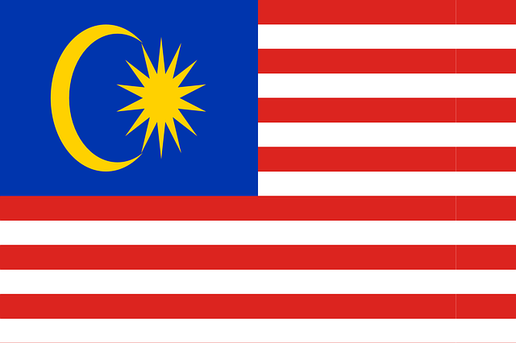

| 말레이시아 | |
|  |
현재시간: 시차:1시간 빠름 수도:쿠알라룸푸르 공용어:말레이어 인구:약 3200만 명 국교:이슬람교(종교의 자유 보장) 전압:220V~240V 화폐단위:링깃(RM)
|
연중 고온 다습한 열대 기후
연평균 기온은 21°C~32°C지만, 고지대의 경우 15°C~25°C
연평균 강수량은 2,000~2,500mm
경찰, 구급, 소방 : 999
음주, 흡연 : 만21세 이상
GOKL CITY BUS
시민들과 관광객들의 편의를 위해 무료 지원
레드, 블루, 퍼플, 그린 라인으로 운영
레드:Relax
블루:work
퍼플:sight-see
그린:shopping
14의 쇼핑몰, 30개 이상의 호텔, 8개의 종교 건축물, 14개의 관광명소에 정차
월-목:6.00 AM ~ 11.00 PM
금-토:6.00 AM ~ 01.00 AM
일요일:7.00 AM ~ 11.00 PM
배차 간격: 5~15분
Grab
사용방법
1. 현지 유심 구매
2. 핸드폰으로 Grab을 다운로드
3. 현지 번호로 인증
4. 현재 위치와 목적지를 입력 후 택시를 부름
팁
배낭여행 중이라면 Grab Shareeh 추천(쉽게 말해 합승인데 약 30% 쌈)
인원이 4명 이상이라면 Grab Car 6 Seater로 부르길
주의사항
이동시간과 무관하게 처음 제시받는 가격과 동일한 비용을 냄
고속도로 입장비는 내는게 맞음(덤터기로 오해X)
출퇴근 시간에는 High Demand(높은 수요)로 가격이 오름
관광지 앞 일렬로 서 있는 택시는 현지 물가에 밝지 않으면 멀리하길
LRT
운행요금은 거리에 따라 달라짐
홈페이지 참고 : www.myrapid.com.my
모노레일
쿠알라룸푸르 시내에서만 운행
작은 수용인원
LRT보다 속도 느림
어른의 한에서 1리터 이하(1병)
담배:1보루(200개비)
향수:400링깃이하
입국 날짜를 기준으로 6개월 이상 유효기간이 남은 여권이나 여행 서류 소지
사회사업 또는 사업 목적의 방문 시에는 국적과 무관하게 무비자로 입국 가능
| 날짜 | 평일 | 공휴일 | 유형 | 설명 |
| 1월 1일 | 화요일 | 새해 첫날 | 대체휴무일 | 일 년의 가장 첫날. |
| 2월 5일 | 화요일 | 중국의 설날 | 공휴일 | 봄 축제로도 잘 알려진 이 축제는 중국 전통의 음력 달력의 전환기를 기념하여 열리는 중요한 기념일 |
| 2월 6일 | 수요일 | 중국의 설날2 | 공휴일 | 중국의 설날의 2일째 되는 날로서,결혼한 딸들이 그들의 친부모, 친척, 가까운 친구들을 방문하는 날 |
| 2월 14일 | 목요일 | 발렌타인 데이 | 대체휴무일 | 문화적 상징이자 종교적 및 상업적인 행사로서 로맨스 및 로맨틱한 사랑의 기념하는 날 |
| 3월 4일 | 월요일 | 마하 시바라트리 시바라트리 |
대체휴무일 | 힌두교 축제 중 하나로서 매년 시바 신을 기리기 위해 만들어짐 이 날은 힌두교 달력의 마지막 날인 팔군 달 13일에 개최 |
| 4월 3일 | 수요일 | 미라지 | 대체휴무일 | 무함마드의 미라지 여정을 기념하는 날 이는 이슬람력에 있어 가장 중요 사건 중에 하나 |
| 4월 19일 | 금요일 | 성 금요일 | 대체휴무일 | 예수의 부활을 기념하는 기독교 축제이자 휴일 |
| 4월 21일 | 일요일 | 부활절 | 대체휴무일 | 예수의 부활을 기념하는 기독교 축제이자 휴일 |
| 5월 1일 | 수요일 | 근로자의 날 | 공휴일 | 유럽에서 매년 5월 1일은 봄 축제이자 노동자를 기리는 근로자의 날 기념 행사가 이루어짐 |
| 5월 19일 | 일요일 | 석가탄신일 | 공휴일 | 본 명절은 전통적으로 동아시아 대부분의 지역에서 고타마 싯다르타 왕자의 생일을 기념하기 위해 행해지는 기념일 말레이시아에서는 웨삭 데이라는 명칭으로 부처님 오신날을 기념 |
| 6월 5일 | 수요일 | 하리라야 아이딜피트리 | 공휴일 | 이슬람력으로 금식월(사움)에 진행되는 라마단 기간이 끝남에 따라 세계적으로 이루어지는 중요한 종교적 명절 이는 사왈월의 첫 번째 날에 개최 |
| 6월 6일 | 목요일 | 하리라야 아이딜피트리 | 공휴일 | 하리 라야 아이딜피트리 휴일의 두번째 날 이는 이슬람력의 사왈 월 두번째 날에 해당 |
| 8월 11일 | 일요일 | 이드 알-아드하 | 공휴일 | 이슬람교에 있어 가장 중요한 명절 중 하나로 이브라힘(아브라함)이 하나님의 명령에 따라 아들을 희생시키려한 의지를 기리기 위해 제정된 날 이는 이슬람력으로 둘-히자 월의 열번째 날에 이루어짐 |
| 8월 31일 | 토요일 | (말레이시아)독립기념일 | 공휴일 | 말레이시아가 영국으로부터 독립한 날을 기리기 위한 날 |
| 9월 1일 | 일요일 | 무하람 | 공휴일 | 이슬람의 새해 명절이자 새로운 이슬람력의 시작을 기념하는 날 |
| 9월 9일 | 월요일 | 국왕 탄생일 | 공휴일 | 국경일로서 양 디 페르투안 아공(말레이시아 국왕의 직함)의 생일을 축하하기 위해 지정된 날 |
| 9월 16일 | 월요일 | 말레이시아의 날 | 공휴일 | 1963년 말레이시아 연방의 설립을 기념하는 날 말레이시아, 북부 보르네오 및 사라왁의 공식적인 통합이라는 의미를 담고 있음 |
| 10월 27일 | 일요일 | 디왈리 | 공휴일 | 말레이시아에서 하리 디왈리로 알려져 있으며 아스와유자 달에 개최 |
| 11월 10일 | 일요일 | (예언자)무함마드 탄생일 | 공휴일 | 예언자 무함마드의 탄생을 기념하는 전통 행사로서 라비 알-와왈의 12번째 날로 지정 |
| 12월 24일 | 화요일 | 크리스마스 이브 | 대체휴무일 | 예수 그리스도의 전통적인 탄생일로서 기독교의 대표적인 기념일 중 하나인 크리스마스의 전야에 개최 |
| 12월 25일 | 수요일 | 크리스마스(성탄절) | 공휴일 | 예수 그리스도의 탄생을 기념하는 기독교의 대표적인 기념일 중 하나 서양 기독교 및 일부 서방 교회에서는 12월 25일, 동방 정교회를 포함한 대부분의 동방 교회에서는 1월 7일로 지정하여 기리고 있음 |
| 12월 31일 | 화요일 | 새해 전야 | 대체휴무일 | 그레고리력의 마지막 날 |